정보통신산업기사 (2017-09-23 기출문제)
1과목: 디지털전자회로
1. P형과 N형 사이에 샌드위치 형태의 특별한 반도체증인 진성층을 갖고 있으며, 이 층이 다이오드의 커패시턴스를 감소시켜 일반적인 다이오드 보다 고주파에서 동작하며, RF 스위칭용으로 사용되는 다이오드는?
- 핀(PIN) 다이오드
- 건(Gunn) 다이오드
- 임팻(IMPATT) 다이오드
- 터널(Tunnel) 다이오드
(정답률: 85%)

2. 전압 안정계수가 0.1인 정전압회로의 입력전압이 ± 5[V] 변화할 때 출력 전압의 변화는?
- ± 0.01[mV]
- ± 1.2[mV]
- ± 0.2[V]
- ± 0.5[V]
(정답률: 88%)
3. 다음 그림과 같은 전압궤환 Bias회로에서 IE는 얼마인가? (단, β=50, VBE=0.7[V], VCC=10[V]이다.)
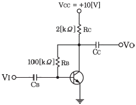
- 2.35[mA]
- 2.35[A]
- 4.6[mA]
- 4.6[A]
(정답률: 51%)
4. 다음 그림과 같은 전압궤환 바이어스회로에서 콘덴서 “C"에 대한 설명으로 틀린 것은?
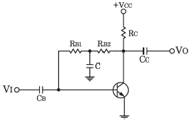
- 교류신호 이득 감소방지용 바이패스 콘덴서
- 콘덴서 C는 직류적으로 개방(Open)
- 콘덴서 C는 교류적으로 단락(Short)
- 교류신호 입력 시 베이스로 부궤환을 유도키 위한 소자
(정답률: 69%)
5. 다음 그림과 같은 미분 연산기에 입력파형을 구형파로 인가하였을 때의 출력파형은?
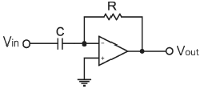
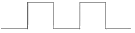
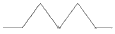
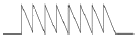
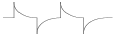
(정답률: 80%)
6. 다음 중 이상적인 연산증폭기의 특징이 아닌 것은?
- 입력 임피던스가 무한대이다.
- 대역폭이 무한대이다.
- 출력 임피던스가 무한대이다.
- 전압이득이 무한대이다.
(정답률: 57%)
7. 다음 중 하틀리 발진기에서 궤환 요소에 해당하는 것은?
- 저항성
- 용량성
- 유도성
- 결합성
(정답률: 76%)
8. 다음 중 발진 주파수가 변하는 경우 주요 요인이 아닌 것은?
- 전원 전압의 변동
- 주위의 온도 변화
- 부하의 변동
- 대역폭의 변화
(정답률: 72%)
9. 아날로그 TV의 영상신호 전송에 사용되는 방식으로 한 쪽 측파대의 일부를 남겨 통신하는 방식은?
- VSB(Vestigial Side Band)
- DSB(Double Side Band)
- SSB(Single Side Band)
- FSK(Frequency Shift Keying)
(정답률: 68%)
10. AM 피변조파의 반송파, 상측파대, 하측파대의 각 전력성분의 비는? (단, m은 변조도이다.)
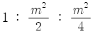
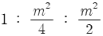
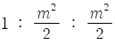
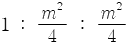
(정답률: 71%)
11. 다음 중 디지털 변복조 방식을 사용하는 디지털 통신 시스템을 설계할 때 설계 목표로서 거리가 먼 것은?
- 최대 데이터 전송률
- 최소 심볼 오류
- 최소 점유 대역폭
- 최대 전송 전력
(정답률: 57%)
12. 최고 주파수가 15[kHz]인 신호파를 펄스 변조할 경우 표본화의 최저 주파수는?
- 45[kHz]
- 30[kHz]
- 20[kHz]
- 15[kHz]
(정답률: 78%)
13. 다음 중 오버슈트(Overshoot)에 대한 설명으로 옳은 것은?
- 펄스 상승 부분의 진동의 정도를 말한다.
- 이상적 펄스의 상승 시각에 진폭의 90[%]까지 이르는 것을 말한다.
- 이상적 펄스의 하강 시각에 진폭의 10[%]까지 이르는 것을 말한다.
- 상승 파형에서 이상적 펄스 파의 진폭보다 높은 부분의 높이를 말한다.
(정답률: 77%)
14. 다음 중 신호 전압의 특정한 레벨의 위 또는 아래를 자르기 위해 사용되는 회로는?
- 슈미트 트리거(Schmitt Trigger)
- 멀티바이브레이터(Multivibrator)
- 클리퍼(Clipper)
- 클램퍼(Clamper)
(정답률: 80%)
15. 다음 중 TTL(Transistor Transistor Logic) 회로의 특징이 아닌 것은?
- 집적도가 높다.
- 동작속도가 빠르다.
- 소비 전력이 비교적 적다.
- 온도의 영향을 적게 받는다.
(정답률: 71%)
16. 다음 그림의 회로에 해당하는 논리기호는? (단, 정논리 이다.)
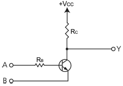
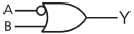
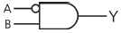
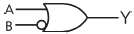
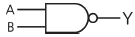
(정답률: 60%)
17. 다음 중 순서 논리 회로에 대한 설명으로 틀린 것은?
- 입력 신호와 순서 논리 회로의 현재 출력상태에 따라 다음 출력이 결정된다.
- 조합 논리회로와 결합하여 사용할 수 없다.
- 순서 논리회로의 예로 카운터, 레지스터 등이 있다.
- 데이터의 저장 장소로 이용 가능하다.
(정답률: 76%)
18. 4비트 5진 계수기의 상태를 올바르게 나타낸 것은?
- 0000 → 0001 → 0010 → 0011 → 0100 → 0000
- 0000 → 0001 → 0010 → 0100 → 1000 → 1001
- 0001 → 0010 → 0011 → 0100 → 0101 → 0000
- 0001 → 0010 → 0100 → 1000 → 1001 → 0000
(정답률: 79%)
19. 다음 중 인코더(Encoder)에 대한 설명으로 옳은 것은?
- 2진 코드형식의 신호를 출력 신호로 변환
- 해당 값에 맞는 번호에만 1을 출력하는 회로
- 여러 가지 2진수의 덧셈기로 형성된 회로
- 입력신호의 자료를 2진 코드로 변환
(정답률: 67%)
20. 다음에 설명하는 논리회로 소자로 알맞은 것은?
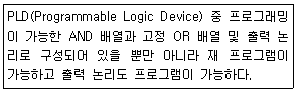
- PLA(Programmable Logic Array)
- GAL(Generic Array Logic)
- PLE(Programmable Logic Element
- PAL(Programmable Array Logic)
(정답률: 65%)
2과목: 정보통신기기
21. 다음 데이터 처리방식에 따른 통신제어장치(CCU)의 분류 중 대규모 데이터 통신시스템에 많이 사용되는 것으로 컴퓨터에 걸리는 부하가 가장 적은 방식은?
- 비트 버퍼 방식
- 메시지 버퍼 방식
- 문자 버퍼 방식
- 블록 버퍼 방식
(정답률: 70%)
22. 다음 중 DTE와 DCE를 상호 연결하기 위해 기계적, 전기적, 기능적, 절차적인 조건들을 표준화한 것은?
- 토폴로지
- DCC 아키텍처
- DTE/DCE 인터페이스
- 참고 모형
(정답률: 90%)
23. 다음 중 정보통신시스템의 구성 분류에서 데이터처리계 (정보처리 시스템)에 해당되지 않는 것은?
- 중앙처리장치
- 변복조장치
- 기억장치
- 입출력장치
(정답률: 45%)
24. 디지털 가입자 회로기술로서 망측과 가입자측에 가각 설치되어 가입자 선로상으로 효율적인 데이터 전송을 위한 것이 아닌 것은?
- HDSL
- ADSL
- VDSL
- DSSL
(정답률: 78%)
25. 컴퓨터나 단말기에서 필요로 하는 디지털 신호를 아날로그 전송로의 특성에 맞게 신호를 변환시키는 통신장치는?
- MODEM
- DTE
- TDM
- OMR
(정답률: 89%)
26. 정보통신시스템의 통신회선 종단에 위치한 신호변환장치 중에서 디지털 전송로인 경우 단극석 신호를 쌍극성 신호로 변환이 가능한 장치는?
- 코덱
- 음향결합기
- 코드변환기
- 디지털 서비스 유니트
(정답률: 82%)
27. 다음 중 DSU(Digital Service Unit)의 특징이 아닌 것은?
- LAN 또는 WAN 상에서 디지털 전용회선 연결에 사용된다.
- 단말기가 디지털 네트워크 서비스를 이용하고자 할 때 필요하다.
- 정확한 동기 유지를 위한 Clock 추출회로가 있다.
- 음성급 전용망에서 디지털 신호를 전홍하기 위하여 등화기와 AGC가 필요하다.
(정답률: 80%)
28. 입력 장비가 3개인 동기식 TDM에서 각 프레임은 7개의 문자로 구성되어 있으며 프레임마다 동기를 위하여 2[bits]를 할당한다. 각 문자는 8[bits]이고, 각 입력단의 장비는 5,800[bps]로 보낸다고 할 때 다중화된 후의 프레임 속도는?
- 100[frames/second]
- 200[frames/second]
- 300[frames/second]
- 400[frames/second]
(정답률: 76%)
29. 다음 중 전화망의 교환시설에 속하지 않는 것은?
- 시내교환기
- 시외교환기
- 중계교환기
- 가입자선로
(정답률: 85%)
30. 다음 조건에 해당하는 전화기의 접속률은?
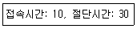
- 25[%]
- 40[%]
- 90[%]
- 133[%]
(정답률: 80%)
31. 디지털 전송방식 중 Run-Length 부호화 방식의 압축률은 얼마인가? (단, 전 화소수 : 200, 부호화 Bit수 : 2)
- 50
- 100
- 200
- 300
(정답률: 83%)
32. 다음 중 화상회의 시스템에 대한 기능으로 틀린 것은?
- 일반적으로 소프트웨어 기반 영상은 하드웨어 기반의 비해 화질이 좋지 않다.
- 영상신호의 부호화와 복호화를 위해 코덱이 사용된다.
- 고화질의 영상을 전송하기 위한 영상압축 기술이 필요하다.
- 화상회의 시스템은 보안에 강하다.
(정답률: 84%)
33. 동영상 및 데이터 정보를 실시간 정송하는 인터넷 방송의 주요 기술이 아닌 것은?
- IP 멀티캐스팅
- 푸시 및 스트리밍 기술
- 오디오ㆍ비디오 압축/복원 기술
- 파일럿 신호발생 기술
(정답률: 77%)
34. FM 변조에서 주파수 편이가 일정한 한계를 넘지 않도록 자동적으로 제어하는 회로는?
- IDC 회로
- AVC 회로
- DAGC 회로
- AFC 회로
(정답률: 67%)
35. 다음 중 위성을 이용한 위치, 속도 및 시간 측정 서비스를 제공하는 시스템은?
- DBS(Direct Broadcasting System)
- GPS(Global Positioning System)
- TRS(Trucked Radio System)
- VRS(Video Response System)
(정답률: 93%)
36. 다음 중 위성통신을 위한 시스템의 구성요소에 해당 하지 않은 것은?
- 지구국
- 관제국
- 통신위성
- 위성발사체
(정답률: 82%)
37. 다음 중 음악 압축에 사용되는 것으로 CD 수준의 음질로 압축하는 표준은?
- JPEG
- MPEG-2
- MP3
- MPEG-4
(정답률: 87%)
38. TV 채널대역 중 영상신호와 음성신호 대역으로 사용되지 않는 부분을 이용하는 것은?
- 텔레텍스트
- 비디오텍스
- 텔렉스
- 텔레텍스
(정답률: 74%)
39. 다음 중 멀티미디어의 특징이 아닌 것은?
- 두 가지 이상의 매체를 동시에 사용한다.
- 사용자와 시스템 간에 상호작용을 해야 한다.
- 시스템을 사용해 정보를 얻을 수 있어야 한다.
- 두 가지 이상의 시스템으로 매체가 통제되어야 한다.
(정답률: 85%)
40. 다음 중 VOD(Video On Demand) 시스템의 사용자부에 대한 설명으로 틀린 것은?
- 세션에 대한 물리적 관리를 진행한다.
- '클라이언트부'라고도 한다.
- 헤드엔드와 통신이 가능한 셋탑박스가 있다.
- 고객이 요청하는 시간과 콘텐츠를 상기 시스템과 실시간으로 통신 하여 이용자에게 서비스를 제공한다.
(정답률: 76%)
3과목: 정보전송개론
41. 다음 중 1비트를 사용하며, 2레벨 양자화 사용하는 변조방식은?
- TDM
- DPCM
- PCM
- DM
(정답률: 68%)
42. 다음 중 입력되는 신호에 따라 반송파의 진폭만을 변화시키는 변조방식은?
- PSK
- ASK
- FSK
- QAM
(정답률: 68%)
43. 16위상 변조방식을 사용하는 변복조기에서 단위 펄스위 시간간격이 T=8×10-4[s]일 때, 데이터 전송속도와 변조속도는 각각 얼마인가?
- 2,500[bps], 1.250[baud]
- 5,000[bps], 1.250[baud]
- 2,500[bps], 2,500[baud]
- 5,000[bps], 2,500[baud]
(정답률: 82%)
44. 공동 이용기(Sharing Unit)의 도입 시 고려할 요소로 가장 거리가 먼 것은?
- 네트워크 환경
- 자동 응답기
- 접속 가능한 모뎀
- 동시 접속 단말기 수
(정답률: 77%)
45. 다음 중 이동통신에서 사용되는 다원접속방식이 아닌 것은?
- WDMA
- FDMA
- TDMA
- CDMA
(정답률: 67%)
46. 다음 중 동축케이블에서 외부로부터 유도 방해를 받지 않기 위해 접지하는 부분은 무엇인가?
- 외부도체
- 절연체
- 내부동체
- 피복
(정답률: 76%)
47. 동축케이블을 이용한 케이블TV 망에서 케이블TV 회선과 인터넷 사용을 위한 사용자 PC를 연결해 주는 장치는?
- 광중계기
- 케이블 모뎀
- 헤드엔드
- 트랜시버
(정답률: 86%)
48. 다음 중 전송선로에서 누화(Cross Talk)의 영향을 줄이는 방법으로 적절하지 않은 것은?
- 누화 보상
- 프로징(Frogging)
- 압신기(Compander)
- 시험감쇠(Test Attenuation)
(정답률: 67%)
49. 다음 중 비동기식 전송 방식의 특징으로 옳은 것은?
- 송신측과 수신측이 항상 동기를 유지한다.
- 문자나 비틀르 Start-Srop 비트 없이 전송한다.
- 정보 전송형태는 블록 단위로 이루어진다.
- 전송되는 각 문자 사이에 휴지기간(Idle Time)이 있다.
(정답률: 77%)
50. 다음 중 비트 동기를 얻을 수 있는 방법이 아닌 것은?
- 1차 또는 2차 표준(망동기 기준 클럭)으로부터 동기 클럭 신호를 추출하는 방법
- 주 신호 채널과 분리된 보조 채널의 동기화된 신호로부터 동기 클럭 신호를 추출하는 방법
- 변조된 수신 신호로부터 동기 클럭 신호를 유도하는 방법
- 1개 또는 2개 이상의 SYN 문자를 정보 블록 앞에 추가로 전송하여 동기를 확보하는 방법
(정답률: 72%)
51. 디지털 통신시스템의 수신기에서 수신되는 비트열(Bit Stream)의 클럭 또는 비트 파형의 전이(Transition)를 재생하는 동기 방식은?
- 비트 동기
- 문자 동기
- 플래그 동기
- 프레임 동기
(정답률: 78%)
52. 다음 중 공통선 신호방식(SS7)에 대한 설명으로 옳지 않은 것은?
- 디지털 원거리 통신 네트워크에서 사용되도록 최적화시킨다.
- 손실이나 중복이 없는 고신뢰성 수단을 제공한다.
- 아날로그 채널에서 64[kbps]의속도로 동작하기에 적합하도록 한다.
- 패킷교환 네트워크에서 수행되는 기능을 규정하며, 이는 하드웨어를 사용하도록 규제한다.
(정답률: 58%)
53. 다음 중 비트방식의 데이터링크 프로토콜이 아닌 것은?
- SDLC
- HDLC
- BSC
- LAP-B
(정답률: 75%)
54. OSI 7계층에서 네트워크계층 프로토콜이 아닌 것은?
- ARP(Address Resolution Protocol)
- RARP(Reverse Address Resolution Protocol)
- ICMP(Internet Control Message Protocol)
- UDP(User Datagram Protocol)
(정답률: 72%)
55. UDP(User Datagram Protocol)를 사용하는 애플리케이션은 무엇인가?
- DHCP
- FTP
- HTTP
- Telnt
(정답률: 54%)
56. IP address 체계의 B class에서 하나의 네트워크에서 수용할 수 있는 최대 호스트 수는 몇 개인가?
- 128개
- 254개
- 65,534개
- 16,277,214개
(정답률: 80%)
57. 인터넷 IP주소가 십진법으로 129.6.8.4 일 때, 이 주소는 어느 클래스에 속하는가?
- A클래스
- B클래스
- C클래스
- D클래스
(정답률: 81%)
58. 동적 라우팅 프로토콜(Dynamic Routing Protocol)에서 사용하는 알고리즘이 아닌 것은?
- 거리 백터 알고리즘(Distance Vector Algorithm)
- 링크 상태 알고리즘(Link State Algorithm)
- 패스 백터 알고리즘(Path Vector Algorithm)
- 디폴트 상태 알고리즘(Default State Algorithm)
(정답률: 73%)
59. 다음 중 병렬 전송 방식에 대한 특징을 가장 잘 나타낸 것은?
- 전송속도가 느리다.
- 전송로 비용이 상승한다.
- 주로 원거리 전송에 사용한다.
- 직병렬 변환회로가 필요하다.
(정답률: 74%)
60. 다음 HDLC 프레임에서 CRC 기법에 위해 계산된 에러 검사용 정보를 나타내는 것은?
- Flag
- Address
- Control
- FCS
(정답률: 77%)
4과목: 전자계산기일반 및 정보설비기준
61. 중앙처리장치에서 데이터를 임시 기억하는 장소로 레지스터를 사용한다. 이 레지스터(Register)는 중앙처리장치 내부에 있는 소규모의 임시 기억장치로 범용 레지스터와 특수 레지스터로 분류된다. 다음 중 특수 레지스터에 해당되지 않는 것은?
- 데이터 레지스터
- 누산기(AC : Accumulator)
- 스텍 포인터
- 다중 처리기(멀티 프로세서)
(정답률: 55%)
62. 그림과 같은 방식으로 Monitor 화면에 문자를 표시하기 위하여 사용되는 ROM(Read Only Memory)의 역할로서 맞는 것은?
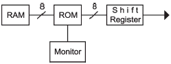
- 문자패턴을 기억한다.
- 제어 프로그램을 기억한다.
- 화면의 커서(Cursor) 위치를 기억한다.
- ASCII 코드를 기억한다.
(정답률: 68%)
63. 2진수 00111110.10100001을 16진수로 변환한 표현으로 옳은 것은?
- 4D.B1
- 4E.A1
- 3D.B1
- 3E.A1
(정답률: 64%)
64. 다음 중 코드에 대한 설명으로 틀린 것은?
- BCD(Binary Coded Decimal) 코드는 10진화2 진 코드로서 일반적으로 사용되고 있는 2진수를 10진수로 표현한 것이다.
- BCD 코드는 보수를 구하기 불편하다.
- Execess-3 코드는 BCD 코드에 3(0011)을 더한 코드이다.
- BCD 코드는 0~9까지만이 표현되기 때문에 1010, 1011, 1100, 1101, 1110, 1111의 6가지는 사용되지 않는다.
(정답률: 53%)
65. 다음 중 운영체제의 기능으로 올바른 것은?
- 데이터베이스 관리
- 바이러스 탐지 및 제거
- Disk Scheduling
- 음성 통신 및 채팅
(정답률: 57%)
66. 다음 중 CPU(Central Processing Unit) 스케줄링 기법에 대한 설명으로 옳은 것은?
- FCFS(First Come First Served) 스케줄링은 선점기법이다.
- SJF(Shortest Job First) 스케줄링은 현재 시점에서 가장 실행 시간이 짧은 프로세스를 먼저 수행하는 선점기법이다.
- SRF(Shortest Remaining Time First) 스케줄링은 현재 남아있는 시간이 가장 짧은 프로세스를 먼저 수행하는 선점기법이다.
- Round Robin 스케줄링은 시간이 일정하게 배정되는 기법으로 비선점기법이다.
(정답률: 60%)
67. 다음 중 펌웨어에 대한 설명 중 옳은 것은?
- 소프트웨어와 하드웨어의 특성을 가지고 있다.
- 하드웨어의 교체 없이 소프트웨어 업그레이드만으로는 시스템 성능을 개선할 수 없다.
- RAM(Random Access Memory)에 저장되는 마이크로컴퓨터 프로그램이다.
- 시스템 소프트웨어로서 응용 소프트웨어를 관리하는 것이다.
(정답률: 70%)
68. 다음 중 마이크로프로그램(Micro Program)에 대한 설명으로 틀린 것은?
- 마이크로프로그램은 마이크로 명령어로 구성된다.
- 마이크로프로그램은 CPU(Central Processing Unit) 내의 제어 장치를 동작시키는 프로그램이다.
- 마이크로프로그램은 처리속도가 빠른 RAM(Random Access Memory)에 저장한다.
- 마이크로프로그램은 각종 제어 신호를 생성한다.
(정답률: 62%)
69. 다음 중 프로그램 카운터의 기능에 대한 설명으로 옳은 것은?
- 다음에 수행할 명령의 주소를 기억하고 있다.
- 데이터가 기억된 위치를 지시한다.
- 기억하거나 읽은 데이터를 보관한다.
- 수행 중인 명령을 기억한다.
(정답률: 78%)
70. 마이크로프로세서의 병렬처리 방식 중 동시수행가능 명령어 등을 컴파일러로 검출하여 하나의 명령어 코드로 압축하는 동시수행기법을 무엇이라 하는가?
- VLIW(Very Large Instruction Word)
- Super-Scalar
- Pipeline
- Super-Pipeline
(정답률: 62%)
71. 전기통신을 효율적으로 관리하고 그 발전을 촉진하기 위한 목적으로 전기통신에 관한 기본적인 사항을 규정하고 있는 법률은?
- 전기통신사업법
- 전기통신기본법
- 정보통신공사업법
- 정보화촉진기본법
(정답률: 81%)
72. 다음은“강전류전선”에 관한 용어의 정의이다. 괄호 안에 적합한 것은?
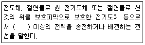
- 100[V]
- 200[V]
- 300[V]
- 400[V]
(정답률: 80%)
73. 다음 괄호 안에 들어갈 내용으로 적합한 것은?
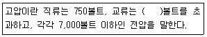
- 300
- 450
- 600
- 700
(정답률: 63%)
74. 다음 중 과학기술정보통신부장관이 전기통신사업법에서 정하는 보편적 역무의 구체적인 내용을 정할 때 고려해야 하는 사항으로 보기 어려운 것은?
- 정보화 촉진
- 이용자의 이익과 안전
- 전기통신무역의 보급 정도
- 정보 통신 기술의 발전 정도
(정답률: 69%)
75. 다음 중 각 설비간의 분계점에 관한 설명으로 잘못된 것은?
- 산업용방송통신설비의 분계점은 사업자 상호간의 협의에 따른다.
- 산업자용방송통신설비와 이용자방송통신설비의 분계점은 도로와 택지 또는 공동주택단지의 각 단지와의 경계점으로 한다.
- 국선과 구내선의 분계점은 사업용방송통신설비의 국선접속설비와 이용자방송통신설비가 최초로 접속되는 점으로 한다.
- 국선용방송통신설비의 분계점은 방송통신위원회가 조정하여 정하는 바에 의한다.
(정답률: 47%)
76. 기간통신사업자의 국선을 몇 회선 이상으로 인입하는 경우에 케이블로 국선수용단자반에 접속ㆍ수용하여야 하는가?
- 2[회선]
- 3[회선]
- 5[회선]
- 10[회선]
(정답률: 77%)
77. 다음 중 선로의 도달이 어려운 지역을 해소하기 위해 사용하는 증폭장치는?
- 전송장치
- 발진장치
- 제어장치
- 중계장치
(정답률: 85%)
78. 다음 중'통신설로설비공사'에 해당되지 않는 것은?
- 지능망설비 공사
- 통신케이블설비 공사
- 통신관로설비 공사
- 통신구설비공사
(정답률: 74%)
79. 다음 중 보편적 역무를 제공하는 전기통신사업자를 지정할 수 있는 기관은?
- 과학기술정보통신부
- 보건복지부
- 국가정보화전략위원회
- 산업통상자원부
(정답률: 86%)
80. 다음 중 감리에 관한 설명으로 적합하지 않은 것은?
- 발주자의 위착을 받은 용역업자가 대행한다.
- 설계도서 및 관련규정의 내용대로 시공되는지 여부를 감독한다.
- 품질관리, 시공관리 및 안전관리에 대한 지도 등을 대행한다.
- 공사 수급인의 권한을 대행하는 것을 말한다.
(정답률: 61%)